Der 3D Viewer öffnet .s3d-Dateien (3D-Export aus dem CAD) und liest daraus alles ab, was man für die Arbeitsvorbereitung an Drehmaschinen und Dreh-Fräszentren braucht: Durchmesser, Längen, Radien, Kegel, Einstiche, Bohrungen mit Eintrittspunkt für die Maschine, Gewinde, Nuten und Schlüsselflächen.
Datei öffnen: Knopf Öffnen (Strg+O) oder die .s3d-Datei einfach ins Fenster ziehen. Zum Ausprobieren liegen im Ordner demo zwei frei erfundene Teile: Demo_Welle.s3d und Demo_Indexbolzen.s3d.
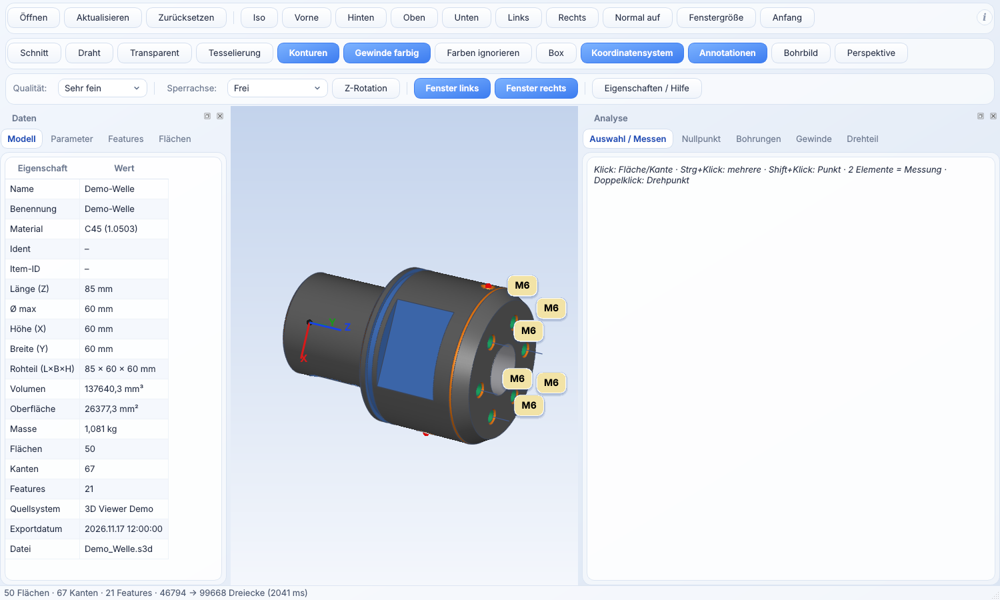
Oben die Knöpfe, links die Daten des Teils (Modell, Parameter, Features, Flächen), in der Mitte das 3D-Bild, rechts die Analyse (Messen, Nullpunkt, Bohrungen, Gewinde, Drehteil).
| Was? | So geht's |
|---|---|
| Teil drehen | linke Maustaste gedrückt halten und ziehen (mit Strg feiner) |
| Verschieben | rechte Maustaste ziehen |
| Zoomen | Mausrad (mit Umschalt feiner, mit Strg zum Mauszeiger) oder mittlere Maustaste ziehen |
| Um die Längsachse drehen | Alt + Mausrad (5° je Raste) |
| Bedienoberfläche größer/kleiner | AltGr + Mausrad |
| Drehpunkt setzen | Doppelklick auf das Teil |
| Ganzes Teil zeigen | Knopf Fenstergröße |
| Menü mit allen Funktionen | Rechtsklick (ohne Ziehen) ins 3D-Bild |
| Alles zurücksetzen | Knopf Zurücksetzen |
| Knopf | Wirkung |
|---|---|
| Iso, Vorne, Hinten, Oben, Unten, Links, Rechts | Standard-Blickrichtungen. Normal auf = senkrecht auf die gewählte Fläche schauen. |
| Schnitt (S) | Längsschnitt → Querschnitt → aus. Verschieben mit Umschalt+Mausrad oder Pfeiltasten, kippen mit Strg+Umschalt+Mausrad. |
| Transparent (G) | Glas-Ansicht: Bohrungen und Kanäle im Inneren sichtbar. In diesem Modus können keine Punkte angeklickt werden. |
| Draht | nur Kanten (Linien-Ansicht) – Klicks wählen Eckpunkte und Kanten. |
| Gewinde farbig | Bereich mit Gewinde grün, Kernloch ohne Gewinde orange. |
| Farben ignorieren (Y) | einheitliches Grau statt CAD-Farben. |
| Box | Außenmaße / Rohteilmaß als Kasten. |
| Annotationen (O) | Gewinde-Hinweise und rote Eintrittspunkte ein/aus. Rechtsklick → „Annotationen nach Typ“ für einzelne Arten. |
| Bohrbild (Strg+B) | Lochkreise und Winkel aller Bohrungen. |
| Fenster links / rechts | Seitenfenster ein- und ausblenden. |
| Vollbild (F11) | nur noch das 3D-Bild über den ganzen Bildschirm – ohne Knopfleisten und Seitenfenster. Nochmal F11 (oder Esc, wenn nichts ausgewählt ist) stellt alles wieder her. |
| Bildausschnitt (Druck) | friert das Fenster ein – Ausschnitt mit der Maus aufziehen (Klick ohne Ziehen = ganzes Fenster, Esc = Abbruch). Das Bild liegt danach in der Zwischenablage (z. B. in Teams oder E-Mail einfügen mit Strg+V). Danach fragt der Viewer, ob es zusätzlich als PNG/JPG gespeichert werden soll. |
| Qualität | wie fein Rundungen dargestellt werden (Messwerte werden immer exakt gerechnet). |
| Sperrachse / Z-Rotation | Drehen nur um eine Achse – praktisch bei langen Wellen. |
| Aktion | Ergebnis |
|---|---|
| Klick auf Fläche oder Kante | wird rot; Infos rechts unter Auswahl / Messen: Art, Ø, Radius, Kegelwinkel … Nochmal klicken = abwählen. |
| Strg + Klick | mehrere Elemente wählen |
| Umschalt + Klick | beliebigen Punkt auf der Fläche wählen |
| Zwei Elemente gewählt | automatische Messung: Abstand, Wandstärke, Achsabstand, Winkel, dX/dY/dZ im Nullpunkt |
| Alt + Rechteck ziehen | mehrere Elemente auf einmal wählen |
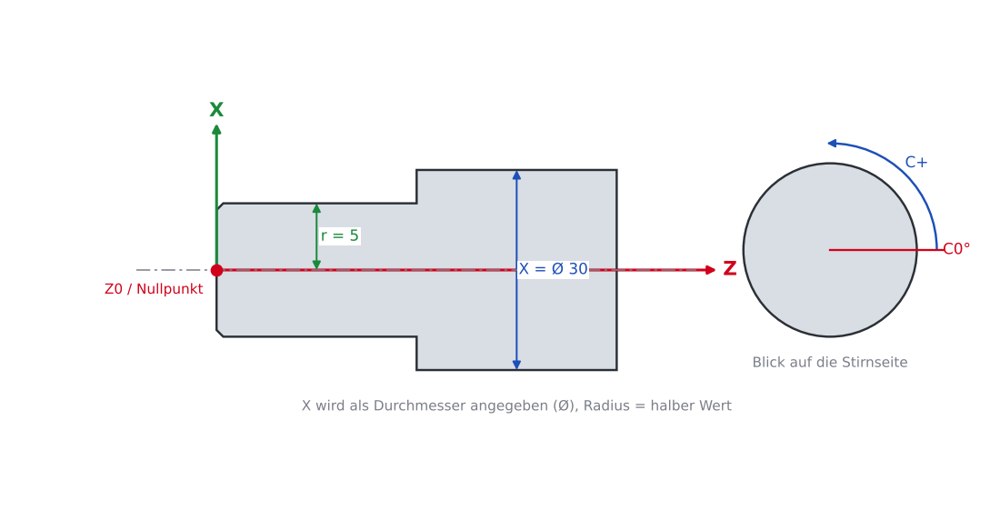
Beim Öffnen legt der Viewer den Nullpunkt automatisch für die Drehmaschine an: Z liegt auf der Längsachse, X zeigt nach außen und wird als Durchmesser angegeben. C0° ist die Richtung von +X.
| Ich will … | So geht's |
|---|---|
| Z0 auf eine andere Planfläche legen | Planfläche anklicken → Reiter Nullpunkt → Nullpunkt aus Auswahl |
| Nullpunkt in Lochkreismitte, Kreismitte, Punkt … | passende Elemente wählen → Nullpunkt aus Auswahl (Beispiele stehen im Reiter) |
| C0° auf eine bestimmte Bohrung legen | Bohrung anklicken → Reiter Nullpunkt oder Rechtsklick → C0° auf Auswahl legen |
| C0° drehen | C0° um 180° drehen oder C0° um Winkel drehen … |
| Z-Richtung umdrehen / Nullpunkt verschieben | Z umkehren / Verschieben … |
| Zurück zur Grundeinstellung | oben im Reiter ↺ Alle Nullpunkt-Werte zurücksetzen – wie direkt nach dem Öffnen (Z = Länge, X = Ø, C0°). Gleiche Wirkung: Drehmaschine (Z = Länge) |
Rechts Drehteil → Maßliste: alle Durchmesser, Planflächen, Fasen, Kegel und Radien mit Z-Lage – sortiert, filterbar („Zeigen“) und als CSV speicherbar. Zeile anklicken = Fläche wird im Bild gezeigt.
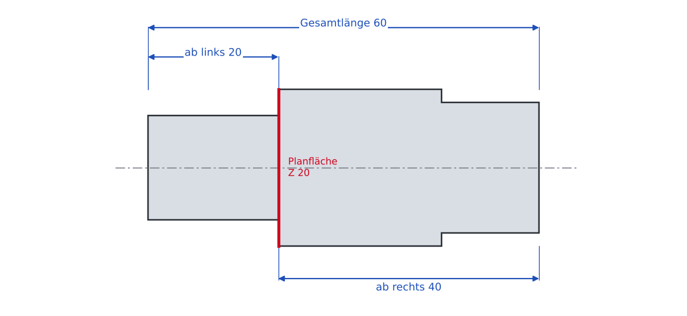
ab links / ab rechts = Abstand von der Stirnfläche am kleinsten bzw. größten Z – so, wie es meistens in der Zeichnung bemaßt ist.
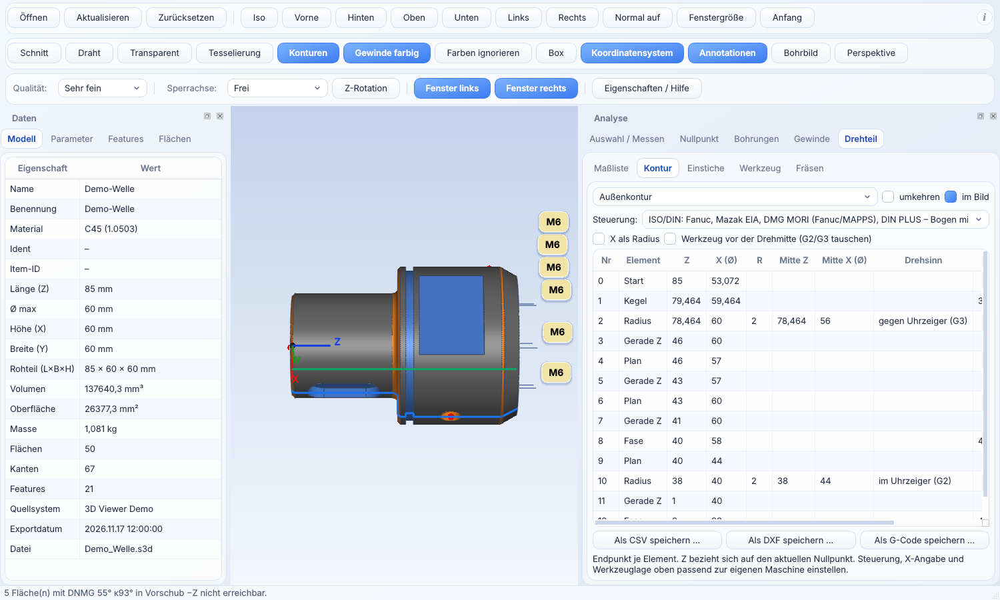
Drehteil → Kontur zeigt die Außen- oder Innenkontur als Elementliste: Endpunkt Z und X, bei Radien R, Mittelpunkt und Drehsinn (G2/G3). „im Bild“ zeichnet die Kontur ins 3D-Bild, „umkehren“ ändert die Richtung.
| Einstellung | Bedeutung |
|---|---|
| Steuerung | ISO/DIN (Fanuc, Mazak EIA, DMG MORI, DIN PLUS – Bogen mit R) oder Siemens 840D (CR=) |
| X als Radius | für Steuerungen, die X im Radius programmieren |
| Werkzeug vor der Drehmitte | tauscht G2/G3 (z. B. Flachbett, Revolver vorne) |
| Als CSV / DXF / G-Code speichern | Punktliste, Zeichnung (Layer AUSSEN, INNEN, ACHSE) oder Konturprogramm (nur Geometrie, ohne Technologie) |
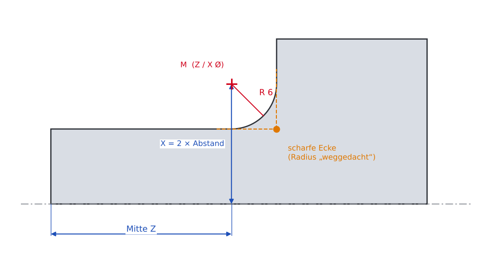
Radius anklicken: Am Bauteil erscheinen R, der Mittelpunkt M mit Z und X (Ø) sowie Anfang und Ende des Bogens. Scharfe Ecke: Radius oder Fase anklicken → Rechtsklick → Radius/Fase löschen (scharfe Ecke). Der Viewer zeigt dann die gedachte Ecke mit exaktem Z und Ø (z. B. für Bemaßung ohne Radius). Radien/Fasen wiederherstellen (Rechtsklick) holt sie zurück.
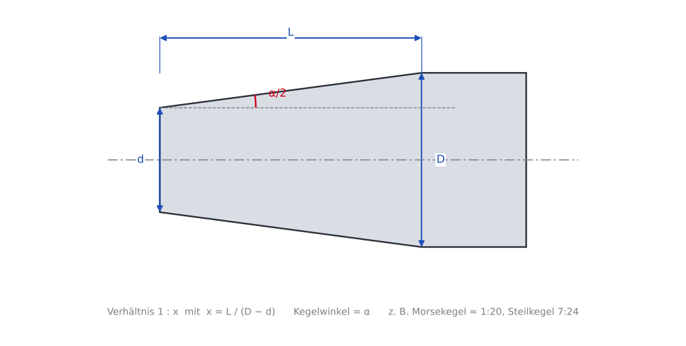
Bei Kegeln stehen in Maßliste und Kontur (Spalte Info): halber Winkel α/2, Kegelwinkel α, D, d, L und bei schlanken Kegeln das Verhältnis 1:x. Passt der Kegel zu einer Norm, steht sie dabei: Morsekegel MK0–MK6, metrischer Kegel 1:20, Steilkegel 7:24 (SK/ISO/BT), HSK 1:10, Kegelstift 1:50, 1:30, 1:16, 1:5, 1:3.
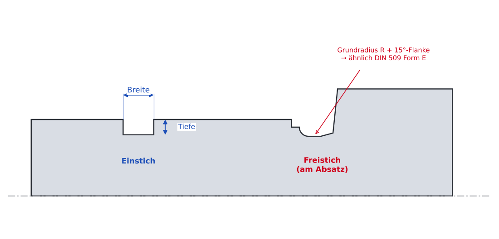
Drehteil → Einstiche listet jede Vertiefung in der Kontur: Z von/bis, Breite, Tiefe, an welchem Ø, Grund-Ø und Radien im Grund. Einstich = zwischen zwei gleich hohen Stellen; Freistich = direkt am Absatz. Hat ein Freistich einen Grundradius und eine 15°-Flanke, steht „ähnlich DIN 509 Form E/F“ dabei – die Maße bitte mit der Norm vergleichen. Innen-Einstiche werden ebenfalls gefunden.
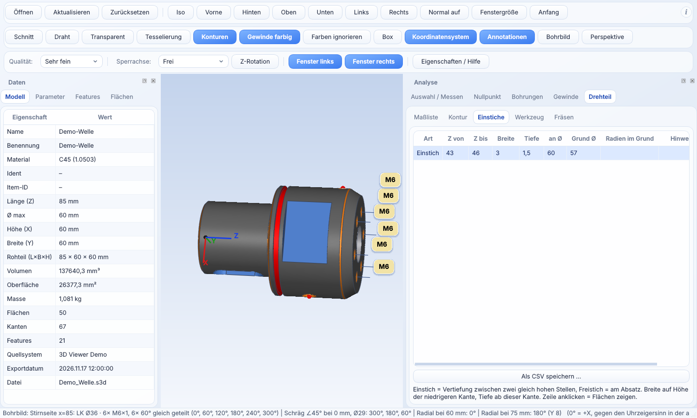
Rechts unter Bohrungen steht jede Bohrung mit allen Werten. Zeile anklicken = Bohrung im Bild zeigen.
| Spalte | Bedeutung |
|---|---|
| Ø, Gewinde, Gew.-Tiefe, Kernloch-T. | Durchmesser bzw. Gewinde mit Gewinde- und Kernlochtiefe |
| X, Y, Z / I, J, K | Eintrittspunkt und Bohrrichtung im Nullpunkt (kartesisch) |
| Tiefe, Art | Tiefe ab Eintritt, Durchgangsbohrung oder Sackloch |
| Winkel°, Abst. Mitte | Lage am Umfang und Lochkreis-Radius |
| Masch. X Ø, Masch. Y, Masch. Z, C°, B° von oben, B° zur Achse, Anschnitt°, Tiefe bis X0 | Werte für das Dreh-Fräszentrum: so anfahren und bohren (siehe Kapitel 10 und 11) |
| Senkung/Stufe | Senk-Ø, Senkwinkel und Tiefe – oder eine Stufe (Senkung mit Zylinder) |
| Spitze | Winkel und Länge der Bohrspitze (z. B. 118° L 1,502), sonst „durch“ oder „flach“ |
| Tiefe voller Ø | bis wohin der volle Durchmesser reicht (Gesamttiefe ohne Spitze) |
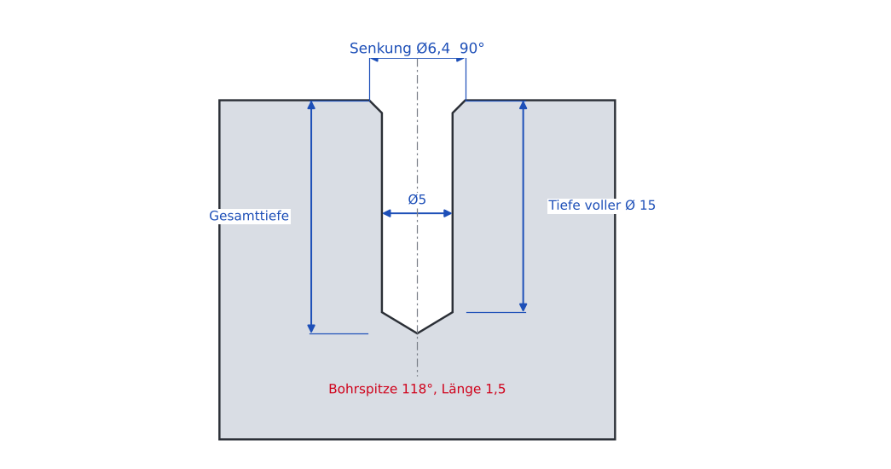
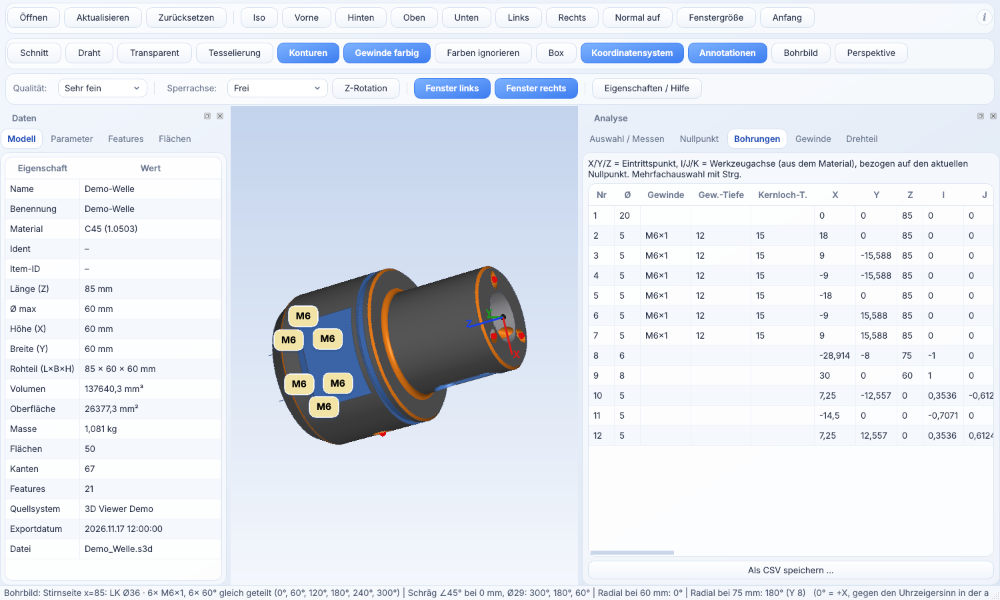
Bei jeder Bohrung, die nicht in Längsrichtung liegt, sitzt ein roter Punkt genau dort, wo die Bohrungsachse auf die Oberfläche trifft – auch wenn die Fläche schräg (Kegel), rund (Mantel, Radius) oder eben ist. Das ist der Punkt, den die Maschine als Bohrungsanfang braucht.
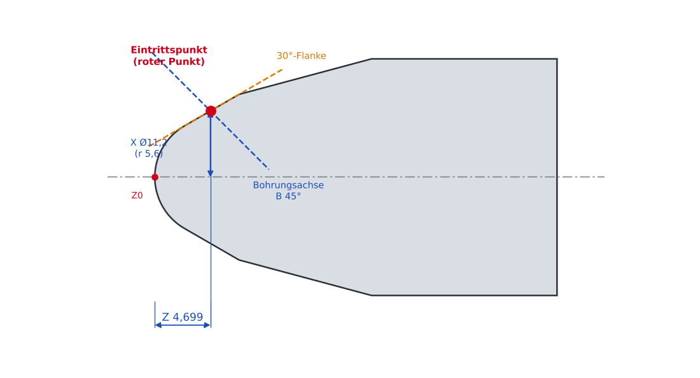
So geht's: Annotationen an (O), Transparent aus, so drehen, dass man in die Bohrung schaut, und auf den roten Punkt klicken. Am Punkt erscheinen:
| X | Durchmesser-Wert des Eintrittspunkts |
| Y | nur bei außermittigen Bohrungen: Versatz zur Mitte |
| Z | Lage auf der Längsachse ab Z0 |
| C | Winkel am Umfang (Werkzeug kommt aus dieser Richtung) |
| B | Neigung der Bohrung, auf zwei Arten: von oben (Bohrer senkrecht von oben = 0°, wie bei der B-Achse am Dreh-Fräszentrum) und zur Längsachse (radial = 90°). Beide ergeben zusammen 90°. Beispiel: Bohrung senkrecht auf eine 30°-Flanke = B 30° von oben = 60° zur Achse. |
| Anschnitt | Winkel, unter dem der Bohrer auf die Fläche trifft (90° = senkrecht). Weicht er ab, setzt der Bohrer schräg an – vorher anbohren oder eine kleine Fläche fräsen. |
| Tiefe bis X0 | so weit (entlang der Bohrachse) muss die Bohrerspitze ab dem roten Punkt bohren, um genau die Mitte X0 zu erreichen – nicht weiter. Beim Indexbolzen: 5,6 / sin 45° = 7,920. Rechnet dein Zyklus bis zur vollen Schneide, kommt die Spitzenlänge dazu (Statuszeile, bei 118°-Bohrer Ø3: +0,901). |
Zusätzlich zeichnet der Viewer die Bohrungsachse (blau) und die Flankenlinie der Fläche (orange) – beide schneiden sich sichtbar im roten Punkt. Unten in der Statuszeile stehen außerdem Werkzeugrichtung und Bohrtiefe.
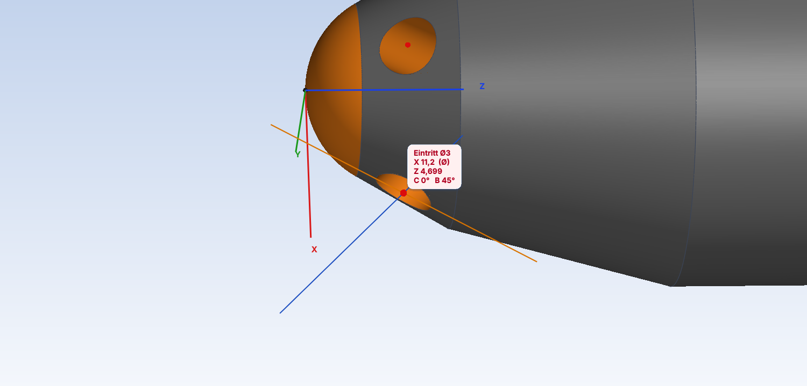
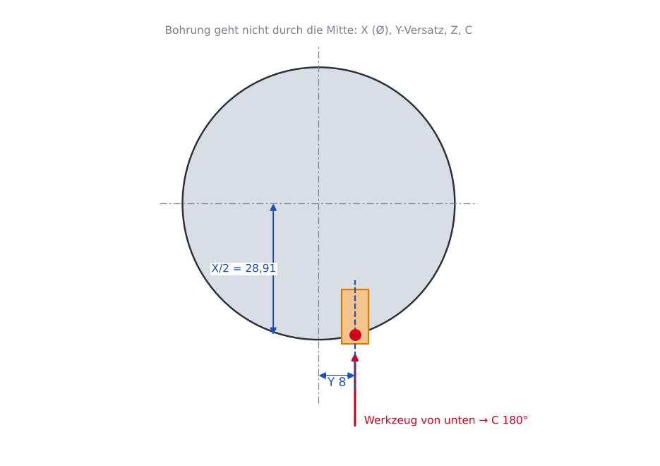
Geht eine Bohrung nicht durch die Bauteilmitte, braucht die Maschine die Y-Achse. Der Viewer dreht C so, dass das Werkzeug von „oben“ kommt, und gibt dann X (Ø), Y-Versatz, Z, C und B an. Im Bohrbild steht der Versatz mit dabei (z. B. „180° Ø6 Y 8“).
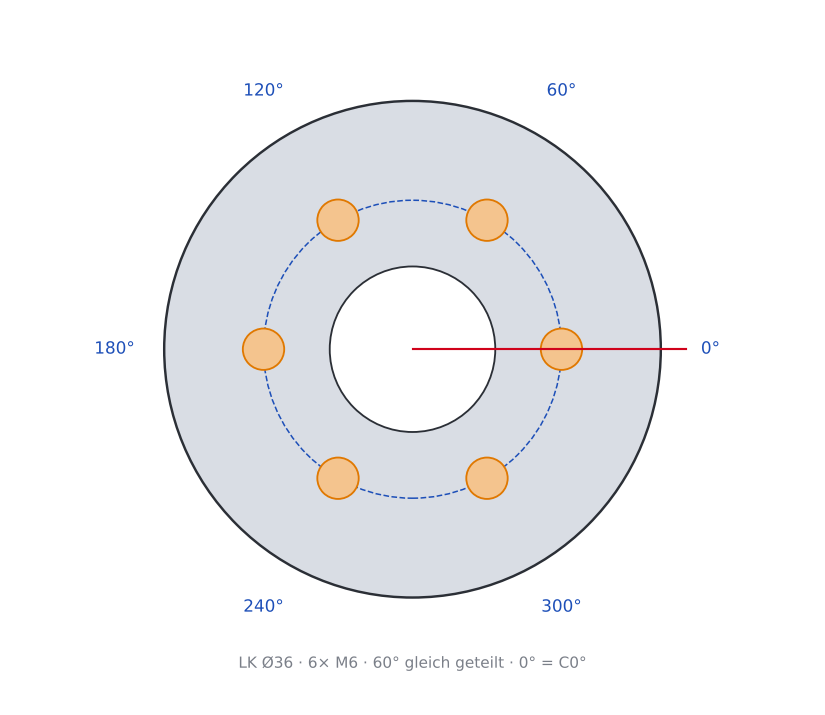
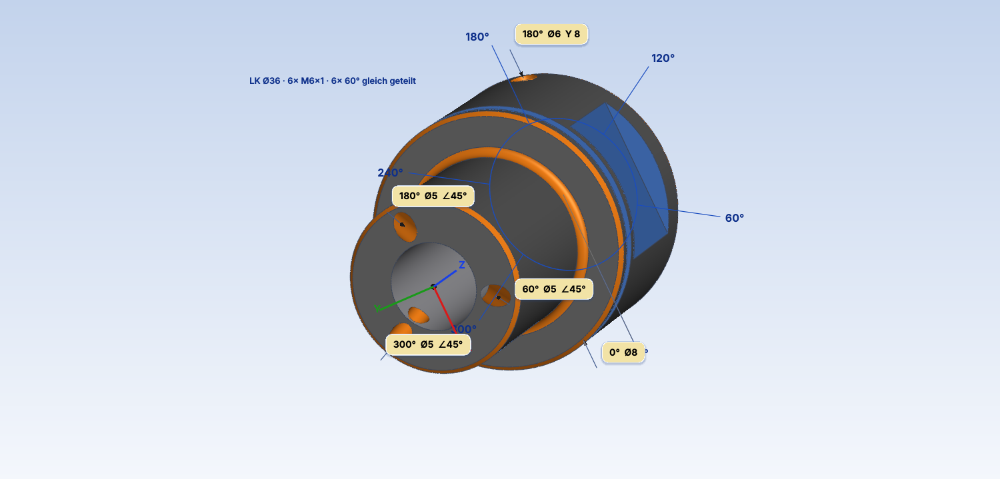
Knopf Bohrbild (Strg+B): Lochkreise an Stirnseiten mit Ø, Anzahl, Teilung („6× 60° gleich geteilt“) und Winkel jeder Bohrung. Radiale und schräge Bohrungen bekommen ein Schild mit Winkel, Ø, Neigung ∠ und ggf. Y-Versatz. Die Winkel zählen gegen den Uhrzeigersinn in der aktuellen Blickrichtung, 0° = C0°.
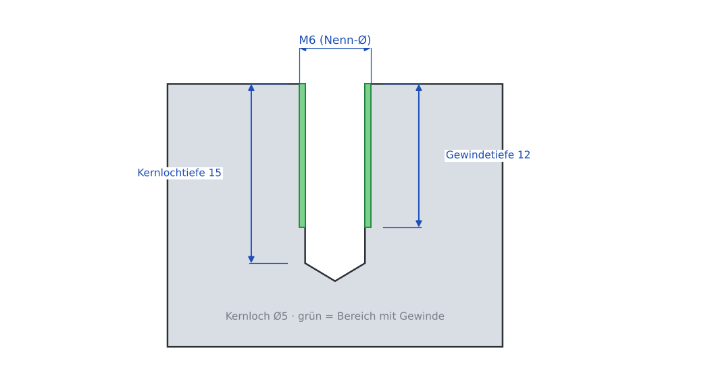
Gewinde stehen im CAD als „symbolisches Gewinde“ in der Datei. Der Viewer zeigt sie rechts unter Gewinde und in der Bohrungstabelle: Bezeichnung (z. B. M6×1), Gewindetiefe, Kernloch-Ø, Kernlochtiefe, Steigung. Mit Gewinde farbig ist der Bereich mit Gewinde im Bauteil grün eingefärbt – am besten im Schnitt ansehen.
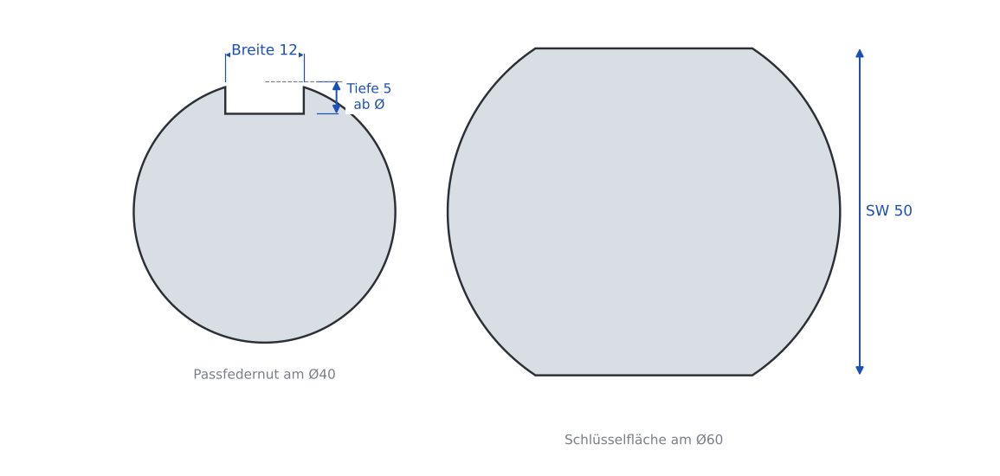
Drehteil → Fräsen findet gefräste Stellen am Drehteil:
| Art | Angaben |
|---|---|
| Nut (Boden mit zwei Seitenwänden) | Breite, Tiefe ab Außendurchmesser (in Nutmitte), an welchem Ø, Z von/bis, Länge, C-Lage, Enden rund oder eckig |
| Schlüsselfläche (zwei gegenüberliegende Flächen) | SW, Tiefe ab Ø, Z von/bis, Länge, C-Lage beider Flächen |
| Abflachung (einzelne Fläche) | Tiefe ab Ø, Abstand Boden ↔ Mitte, Z, Länge, C |
C° ist die Richtung, aus der das Werkzeug auf den Boden schaut. Zeile anklicken = Flächen im Bild markiert.
Zum Programmieren der Nut als Kontur (z. B. in der ZY-Ebene mit Fräserradiuskorrektur) braucht man alle Übergangspunkte zwischen geraden Linien und Rundungen. Dafür gibt es drei Wege:
| Roten Punkt anklicken | An jedem Übergang Linie ↔ Bogen sitzt auf der Nutkante ein roter Punkt (Annotationen an). Klick zeigt Z, Y, X Ø am Boden und an der Oberkante sowie C. |
| Kanten oder Flächen der Nut wählen | z. B. die Nutkanten mit Strg anklicken – rechts unter Auswahl / Messen erscheint die komplette Nut-Kontur als Liste, im Bild die Bahn mit P1, P2 … |
| Drehteil → Fräsen | Nut in der oberen Tabelle anklicken – unten steht die Kontur mit allen Punkten, Radien, Mittelpunkten und G2/G3, als CSV speicherbar. |
Die Koordinaten gelten in der Lage C der Nut: Z entlang der Längsachse, Y quer dazu, X Ø am Nutgrund (Bearbeitungstiefe) und an der Oberkante am Mantel. Der Umlauf ist gegen den Uhrzeigersinn mit Blick von +X – das Werkzeug liegt innen links der Kontur (G41). Mit „Umlauf im Uhrzeigersinn (G42)“ wird die Richtung umgedreht. Die Bögen haben R, Mittelpunkt (Z/Y) und G2/G3 – den Drehsinn bitte einmal mit der Ebenen-Festlegung deiner Steuerung (z. B. G19) abgleichen.
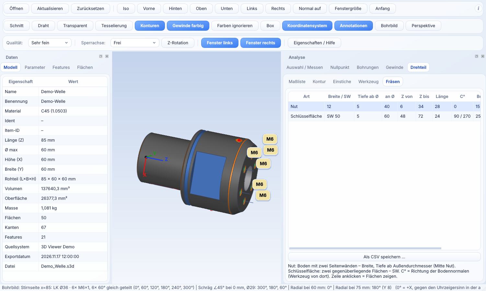
Für umlaufende Taschen in der Stirnfläche (ebener Grund, Außenwand – auch schräg –, innen eine Nabe) erzeugt der Viewer eine Wendel-Fräsbahn: C dreht, Z taucht gleichzeitig gleichmäßig ein, Schrägen werden über X mitgenommen. Ausgabe wie ein Mazak-EIA-Unterprogramm: G01 mit inkrementellen U / W / H (X als Ø, Z, C in Grad), am Ende M99. So lässt es sich in einen Mazatrol-Satz einfügen – auch ohne Option für gleichzeitige Achsbewegungen im Mazatrol-Teil.
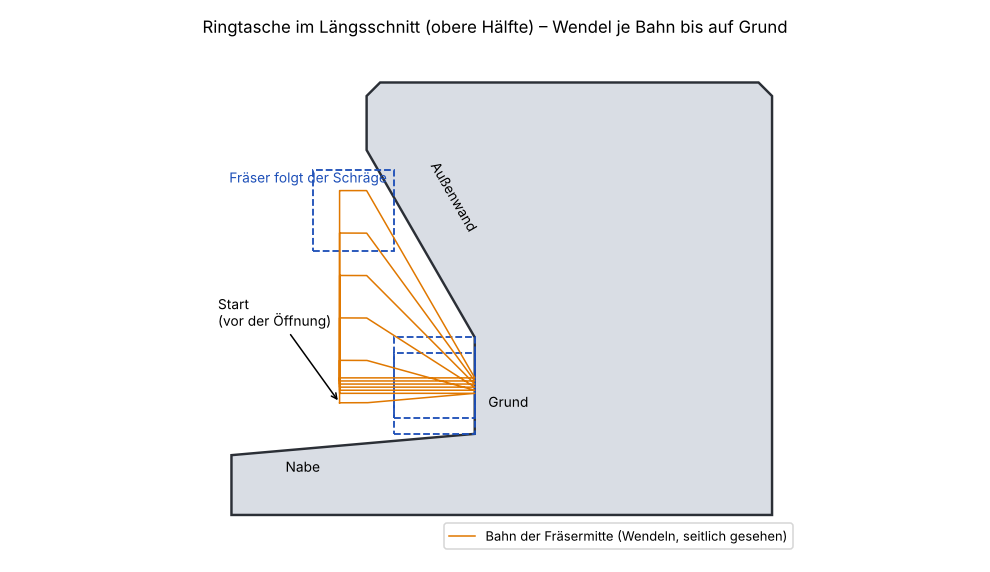
So geht's: eine Fläche der Tasche anklicken → Drehteil → Fräsen → „Ringtasche in der Stirnseite → DIN-ISO-Unterprogramm“. Im Fenster Fräser-Ø, Zustellung je Umdrehung, Bahnabstand, Winkelschritt, Aufmaße, S und F eintragen → Bahn berechnen + im Bild zeigen (orange = Wendel, blau = Runde am Grund, grau = in der Luft) → Als .EIA speichern.
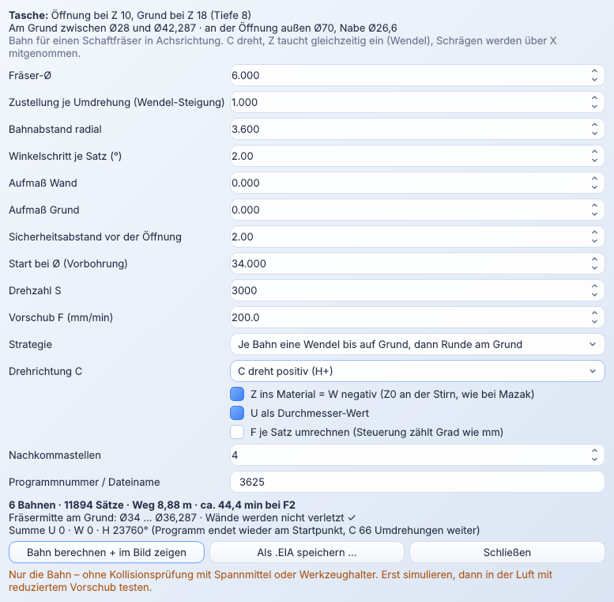
| Einstellung | Bedeutung |
|---|---|
| Strategie „Wendel bis auf Grund“ | je Bahn eine durchgehende Wendel von vor der Öffnung bis auf den Grund, dann eine Runde am Grund. Die Bahnen liegen anteilig zwischen Nabe und Außenwand – oben weiter, unten enger. |
| Strategie „schichtweise“ | je Zustellung eine Wendel-Umdrehung, dann auf dieser Tiefe alle Bahnen als Kreise. |
| Start bei Ø | Bahn, mit der begonnen wird (z. B. Ø der Vorbohrung). Mit der Wendel ist Vorbohren meist nicht mehr nötig. |
| W negativ | Z0 an der Stirn, Material im Minus (Mazak üblich). Ausschalten, wenn ins Material +Z gefahren wird. |
| F je Satz umrechnen | Viele Steuerungen zählen bei C-Bewegungen die Grad wie Millimeter – dann stimmt die Geschwindigkeit am Fräser nicht. Mit der Option bekommt jeder Satz das passende F. |
| Winkelschritt | Drehung je Satz. Kleiner = glatter, aber mehr Sätze (Speicher der Steuerung beachten). 2° ≈ 180 Sätze je Umdrehung. |
Das Programm ist inkrementell und endet wieder am Startpunkt (Summe U = 0, W = 0). Im Kopf steht als Kommentar der Startpunkt (X Ø, Z, C0). Zum Testen den Fräser einfach weiter vorne in der Luft ansetzen – die ganze Bahn läuft dann um diesen Abstand versetzt ab.
Für Nuten, die am Umfang einer Welle laufen – gerade, dann eingedreht, wieder gerade (Kurvennut, Wendelnut, Steuernut) – holt der Viewer die Mittellinie der Nut aus dem Modell und gibt sie als Z/C-Bahn aus. Das Ergebnis sieht aus wie ein CAM-erzeugtes Mazak-Unterprogramm: G01, dann nur Sätze mit inkrementellem W (Z) und H (C in Grad), gleich lange Schritte, am Ende M99. Damit läuft die Nut auch ohne Option für gleichzeitige Achsbewegungen im Mazatrol-Teil.
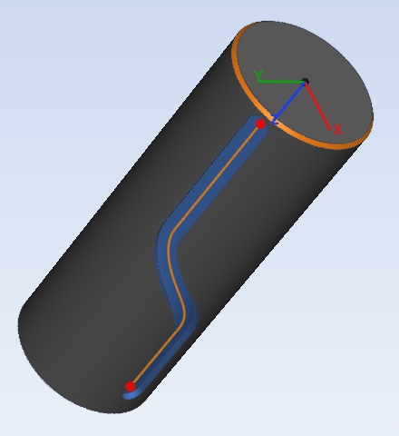
So geht's: den Nutgrund anklicken – am besten mit Strg auch die beiden Nutwände dazu (dann wird es am genauesten) → Drehteil → Fräsen → „Nut am Mantel (Wendelnut) → DIN-ISO-Unterprogramm“. Die orange Linie im Bild ist die gefundene Nutmitte, die roten Punkte sind Anfang und Ende. → Als .EIA speichern.
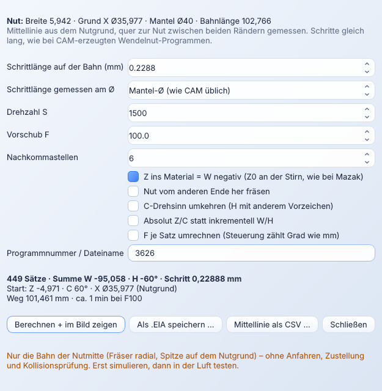
| Einstellung | Bedeutung |
|---|---|
| Schrittlänge auf der Bahn | Länge eines Satzes. Wird leicht angepasst, damit alle Schritte genau gleich lang sind und das Ende genau getroffen wird. 0,2288 mm ergibt z. B. bei Ø40 und 95 mm Nut rund 450 Sätze. |
| Schrittlänge gemessen am Ø | Auf welchem Durchmesser die Schrittlänge gemessen wird. Standard ist der Mantel-Ø, wie es CAM-Systeme machen. Für den Nutgrund dessen Ø eintragen. |
| W negativ | Z0 an der Stirn, ins Material Minus (Mazak üblich). |
| Vom anderen Ende her fräsen | Startet am anderen Nutende; W und H drehen das Vorzeichen. |
| C-Drehsinn umkehren | Falls die Maschine C andersherum zählt als das Modell: H bekommt das andere Vorzeichen. |
| Absolut Z/C | Statt W/H werden absolute Z- und C-Werte ausgegeben. |
| Mittellinie als CSV | Alle Punkte (Z, C, X Ø) als Tabelle, z. B. zum Kontrollieren in Excel. |
Im Kopf des Programms stehen als Kommentar der Startpunkt (X Ø am Nutgrund, Z, C), die Nutbreite, die Länge in Z und die Drehung in C. Dorthin positionieren (Fräser radial, Spitze auf Nutgrund-Tiefe), dann das Unterprogramm aufrufen. Die Summen von W und H gehen genau auf, auch bei 6 Nachkommastellen. Die Nutbreite ist der Fräser-Ø – das Programm fährt nur die Mitte.
Ein Fräser fährt die Bahn im Bild ab und das Material (bronze) verschwindet Stück für Stück – gut zum Erklären und zum Prüfen, ob die Bahn alles erwischt. Das Bauteil bleibt dabei stehen, der Fräser bewegt sich drumherum.
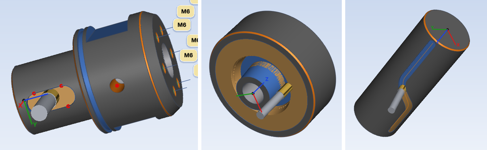
| Merkmal | So starten | Welche Bahn |
|---|---|---|
| Ringtasche in der Stirnseite | im Fenster „Ringtasche …“ auf ▶ Fräsen zeigen | genau die Bahn des .EIA-Programms (Wendel) |
| Nut am Mantel (Wendelnut) | im Fenster „Nut am Mantel …“ auf ▶ Fräsen zeigen | genau die Bahn des .EIA-Programms (Nutmitte) |
| Nut, Schlüsselfläche, Abflachung | Merkmal anklicken (Bild oder Tabelle) → Drehteil → Fräsen → „▶ Fräsen zeigen …“ | Vorführ-Bahn: schichtweise Zickzack + Kontur. Fräser-Ø, Zustellung und Bahnabstand einstellbar. |
Schruppen und Schlichten (Nut, Schlüsselfläche, Abflachung): beim Schruppen Aufmaß Wand (je Seite) und Aufmaß Grund eintragen – der Schruppfräser bleibt um diese Werte von Wand und Grund weg, das Aufmaß bleibt als dünne bronze Schicht sichtbar stehen. Mit „Schlichten mit 2. Fräser“ kommt danach der Schlichtfräser: erst der Grund im Zickzack auf Endmaß, dann die Wand als Kontur (ganze Tiefe in einem Zug oder mit eigener Schlicht-Zustellung). Beim Einschalten werden 0,3 an der Wand und 0,2 am Grund vorgeschlagen. Oben im Fenster steht, ob gerade geschruppt oder geschlichtet wird.
Eintauchen: Schaftfräser, die nicht über Mitte schneiden, dürfen nicht senkrecht ins Volle. Deshalb ist pendelnd eingestellt: der Fräser fährt auf der ersten Bahn hin und her und taucht dabei mit dem Eintauchwinkel (Standard 3°) schräg auf die Schichttiefe ein. Bei Helix taucht er kreisförmig ein – wie beim Mazak-Zyklus Tornado-Fräsen. Ist am Einstieg kein Platz für den Kreis, sucht der Viewer die nächste Stelle, an der er Platz hat, und fährt danach auf Tiefe zum Bahnanfang. Ist auch dafür die Nut zu schmal, wird an dieser Stelle pendelnd eingetaucht; das steht dann im Fenster. Senkrecht nur wählen, wenn der Fräser über Mitte schneidet.
Fräser zu groß? Passt der Fräser gar nicht hinein (z. B. Ø8 in eine 5 mm breite Nut), erscheint eine rote Meldung mit dem größten Fräser, der noch Platz hat. Passt er hinein, erreicht aber nicht alle Stellen (Ecken oder Engstellen kleiner als der Fräser), steht nach „Bahn neu berechnen“ eine rote Achtung-Zeile mit der Fläche, die stehen bleibt. Das absichtliche Aufmaß zählt dabei nicht mit. Mit ⏭ Ende sieht man die Reste bronze im Bild.
An der Maschine stehen dieselben Werte in der Mazatrol-Fräseinheit: Aufmaß unten und seitlich in der Einheit, dazu je eine Werkzeugzeile zum Schruppen und zum Schlichten mit eigenen Schnittwerten. Die Vorführung zeigt nur den Ablauf, Drehzahl und Vorschub spielen dafür keine Rolle.
Knöpfe: ▶ Start / ⏸ Pause, ⟲ Neu (Material wieder voll), ⏭ Ende (alles auf einmal), Schieber Tempo. Unten steht, wie viel Prozent schon ausgeräumt sind. Was am Ende bronze stehen bleibt, erreicht der Fräser nicht (z. B. Ecken an schrägen Wänden bei der Ringtasche).
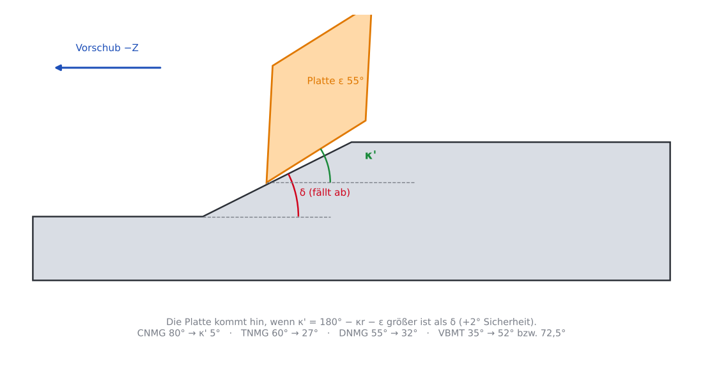
Fällt die Kontur in Vorschubrichtung ab (Kegel, Radius, Absatz), muss die Platte hinten genug Freiraum haben. Dieser Freiraum ist der Nebeneinstellwinkel κ' = 180° − κr − ε. Er muss größer sein als der Abfallwinkel δ der Kontur (der Viewer rechnet 2° Sicherheit dazu).
| Platte | Spitzenwinkel ε | Einstellwinkel κr | κ' (so steil darf es abfallen) |
|---|---|---|---|
| CNMG | 80° | 95° | 5° |
| TNMG | 60° | 93° | 27° |
| DNMG | 55° | 93° | 32° |
| VBMT | 35° | 93° | 52° |
| VBMT | 35° | 72,5° | 72,5° |
Drehteil → Werkzeug: oben Außen-/Innenkontur, Vorschubrichtung und deine Platte wählen. Die Tabelle zeigt für jedes Element, wie steil es in −Z und +Z abfällt und welche Platte mindestens nötig ist. Rot = mit deiner Platte nicht erreichbar. Der Knopf Nicht erreichbare Stellen zeigen markiert diese Flächen im Bild. Unten stehen außerdem der größte erlaubte Schneidenradius (wegen Hohlkehlen) und die größte Einstechbreite.
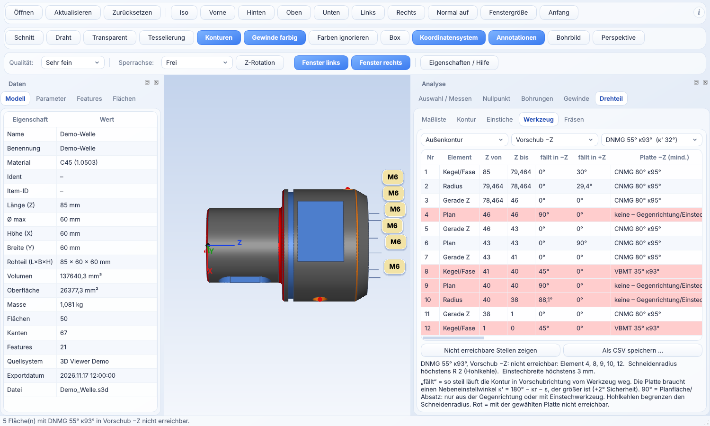
| Frage | Antwort |
|---|---|
| Ich sehe keinen roten Punkt. | Annotationen (O) einschalten. Prüfen, ob die neueste Version läuft (Titelleiste). Bei verdeckten Bohrungen das Teil drehen. |
| Ich kann den roten Punkt nicht anklicken. | Transparent (G) ausschalten – in der Glas-Ansicht werden immer Flächen gewählt. |
| Der Wert hat das falsche Vorzeichen. | Der Viewer zählt Z ins Bauteil positiv. An der Maschine kann Z (und B) negativ sein. |
| Die Drehteil-Tabellen sind leer. | Nullpunkt-Z liegt nicht auf der Längsachse: Reiter Nullpunkt → Drehmaschine (Z = Länge). |
| Wie genau sind die Werte? | Durchmesser, Radien, Winkel und Lagen werden aus der exakten CAD-Geometrie gerechnet, nicht aus dem Bildschirmbild. |
| Bei Druck öffnet sich das Windows-Ausschneidetool statt des Viewers. | Windows 11 belegt die Taste selbst: Einstellungen → Barrierefreiheit → Tastatur → „Druck-Taste zum Öffnen des Bildschirmausschnitts verwenden“ ausschalten. Oder unter Eigenschaften / Hilfe → Tastenbelegung dem „Bildausschnitt“ eine andere Taste geben. |
| Welche Version läuft? | Knopf i oben rechts oder Titelleiste. |
Jede Taste lässt sich unter Eigenschaften / Hilfe → Tastenbelegung ändern.
3D Viewer · © 2026 Christian Diezinger · github.com/Rabenstaub · MIT-Lizenz